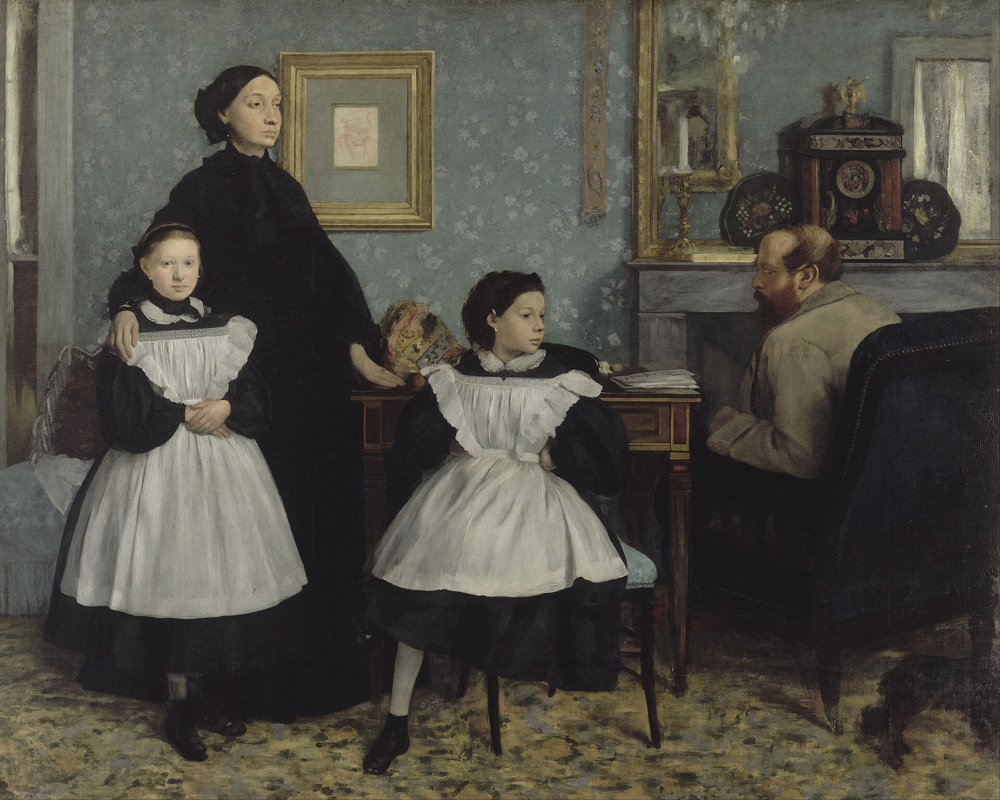

贝列利一家 The Bellelli Family
德加 · 1858–1869年 · 巴黎奥赛博物馆
Edgar Degas · 1858–69 · Musée d'Orsay, Paris
图片：Wikimedia Commons，公有领域 / Image: Wikimedia Commons, public domain

发现 · Discover
姑妈劳拉 Aunt Laura
站着的女子是德加的姑妈劳拉，他父亲的妹妹。她像拍正式肖像一样站得笔直。
The standing woman is Degas's aunt Laura, his father's sister. She stands upright, as if for an official portrait.
墙上的画像 The portrait on the wall
劳拉一身黑衣，是在为刚去世的父亲服丧。她身后墙上的画像，画的就是他，也就是德加的祖父。
Laura is dressed in black, mourning her father, who had recently died. The portrait on the wall behind her shows him: Degas's grandfather.
两个表妹 Two cousins
两个小女孩是德加的表妹，10岁的乔瓦娜和7岁的朱莉娅。
The two girls are Degas's cousins: Giovanna, aged ten, and Giulia, aged seven.
黑裙子，白围裙 Black dresses, white pinafores
德加写信给朋友说，他正在画两个穿黑裙子、系白围裙的小女孩，觉得她们非常可爱。
Degas wrote to a friend that he was painting the little girls in black dresses and white pinafores, and found them delightful.
坐不住的朱莉娅 Restless Giulia
仔细看，朱莉娅坐不住，一条腿蜷在椅子上。
Look closely: Giulia is restless, one leg tucked up beneath her on the chair.
坐在一旁的父亲 The father apart
父亲詹纳罗是一位从那不勒斯流亡的意大利爱国者。他半背对着我们，坐在画面的另一边。
The father, Gennaro, was an Italian patriot exiled from Naples. He sits on the other side of the picture, half turned away from us.
被挡住的画框 The hidden frame
墙上那幅画像的画框，被劳拉的脸和肩膀挡住了一部分。
The frame of the portrait on the wall is partly covered by Laura's face and shoulder.
故事 · The story
ACT I 第一幕 · 佛罗伦萨 Florence
1858年，德加在意大利学画。他的姑妈劳拉邀请他到佛罗伦萨家里住。他借这个机会去乌菲兹美术馆学习，也开始为姑妈一家画习作。
In 1858, Degas was studying art in Italy. His aunt Laura invited him to stay with her family in Florence. He studied at the Uffizi, and began making studies of the family.
1858–1869年 · 巴黎奥赛博物馆 / 1858–69 · Musée d'Orsay, Paris
ACT II 第二幕 · 一个家庭 A family
德加把一幅家庭肖像，画成了历史画那样大的尺寸。画里的一家人，彼此之间似乎隔着一段距离：母亲和女儿们在一边，父亲在另一边。
Degas painted this family portrait on the grand scale of a history painting. The family seems to be held apart: mother and daughters on one side, the father on the other.
1858–1869年 · 巴黎奥赛博物馆 / 1858–69 · Musée d'Orsay, Paris
ACT III 第三幕 · 十年 Ten years
回到巴黎后，德加又画了很多年，大约到1867年才完成。这是他年轻时的第一幅杰作。
Back in Paris, Degas worked on it for years, finishing around 1867. It was the first masterpiece of his youth.
1858–1869年 · 巴黎奥赛博物馆 / 1858–69 · Musée d'Orsay, Paris
一家人，在同一个房间里。 One family, in one room.
作品档案 · Artwork record
| 画家（生卒年） · Artist (dates) | 埃德加·德加（1834–1917） / Edgar Degas (1834–1917) |
|---|---|
| 画名 · Title | 贝列利一家（家庭肖像） / The Bellelli Family (Family Portrait) |
| 年份 · Date | 1858–1869年 / 1858–69 |
| 材质 · Medium | 布面油画 / Oil on canvas |
| 尺寸 · Dimensions | 201 × 249.5 cm |
| 收藏地 · Collection | 巴黎奥赛博物馆（编号 RF 2210） / Musée d'Orsay, Paris (RF 2210) |
关于画家 · About the artist
埃德加·德加（1834–1917），法国画家，生于巴黎。他参加了印象派画展，以描绘芭蕾舞者著称。
Edgar Degas (1834–1917) was a French painter, born in Paris. He took part in the Impressionist exhibitions and is best known for his paintings of ballet dancers.